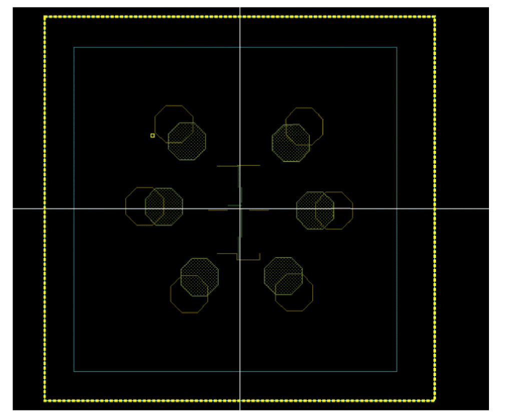
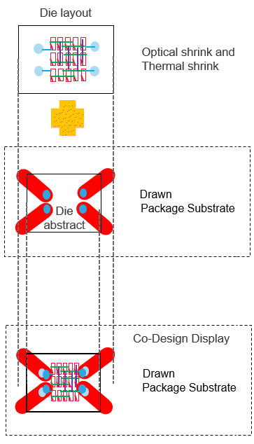

Thermal Shrink Factor
The Virtuoso RF Solution lets you encapsulate dies of different semiconductor materials into a single package. Within a package, flip chip die-to-package assembly is done by soldering the IO pads in the die to the package substrate by heating both the die and the package. The bump flux in the flip chip die melts and fuses with the package substrate. Such connections might be impacted by the differences in the coefficients of thermal expansion (CTEs) of the semiconductor materials that are used in the package. Consider the following example:
To overcome such connectivity issues due to differences in CTEs, Virtuoso lets you set the thermal shrink factor for such dies. This option adjusts the initial positions of IO pads such that connectivity is not broken when the dies are heated. It is recommended that you apply the thermal shrink factor before defining connectivity, as shown in the following example:
Thermal shrink factor is defined as a parameter of the TILP instance. X Thermal Shrink Factor and Y Thermal Shrink Factor are percentage values for expansion or contraction along the x-axis and y-axis, respectively.
- Negative Thermal Shrink Factor (thermal shrink) is applicable when the package expands more than the die abstract.
- Positive Thermal Shrink Factor (thermal expansion) is applicable when the abstract die expands more than the package.
Thermal shrink is applied on IO pads as a factor of the distance of IO pads from center of the die.
dx = X * x_thermalShrink
dy = Y * y_thermalShrink
Closer the IO pad is to center of the die, less is the effect of thermal shrink factor. Farther the IO pad is from the center of the die, greater is the effect of thermal shrink factor.
Impact of Applying Thermal Shrink Factor
-
Edit-in-Concert: When thermal shrink is applied to a TILP die, the IO pads in the die are adjusted, but the IO pads in the corresponding die layout view remain at their actual positions. This may lead to visual misalignments in the Edit-in-Concert mode. When you launch the Edit-in-Concert mode, a warning message indicating the cause of these misalignments is displayed.
 - LVA Checker and Fixer: When thermal shrink is applied, despite visual misalignments in the Edit-in-Concert mode, the LVA checker does not report any misalignment violations and the Annotation Browser does not display any violation markers.
-
Optical Shrink: Optical shrink factor reduces the size of the entire die, whereas thermal shrink factor only shrinks (or expands) the IO pads. When both optical and thermal shrink factors are specified, the optical shrink factor is applied first. Thermal shrink factor is then applied to the optically shrunk die.

Related Topics
Checking and Fixing IO Pad Locations
Edit Instance Properties Form (Die/Package TILP Parameters)
Return to top